Identité de marque · 2024
Stemcon
Construction & précast — Melbourne
Identité d'un constructeur qui livre à l'échelle depuis 2008. Un monogramme charpenté, une base indigo et béton, et un accent haute visibilité : une marque qui « bâtit l'avenir » avec la solidité de son métier.
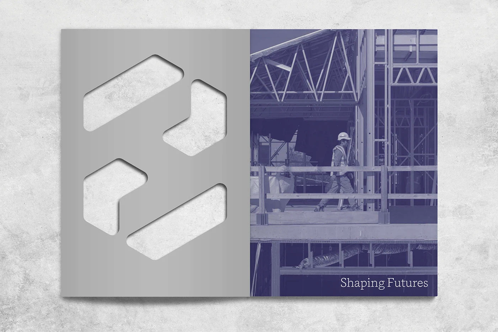
Bâtir une marque à la hauteur de l'ouvrage.
Stemcon construit à l'échelle pour les grands promoteurs de Melbourne. Nous avons conçu un système visuel robuste, décliné du terrain au document : un monogramme découpé dans la matière, une palette indigo profond & béton relevée d'un orange haute visibilité, et une typographie qui allie un titrage à empattements à une linéale technique. Une image qui inspire la confiance sur laquelle repose chaque chantier.
- Client
- Stemcon Construction
- Année
- 2024
- Rôle
- Direction artistique, identité
- Livrables
- Logo & monogramme, signalétique, livrée, EPI, éditions
La marque
Un monogramme découpé — quatre modules qui s'emboîtent comme une structure.
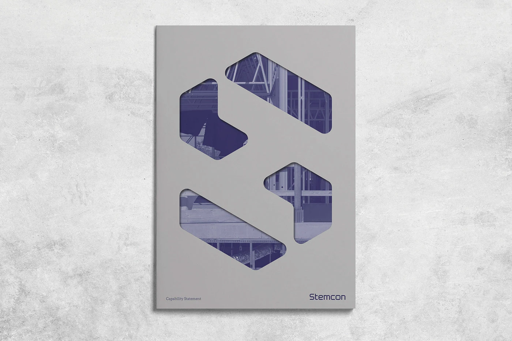
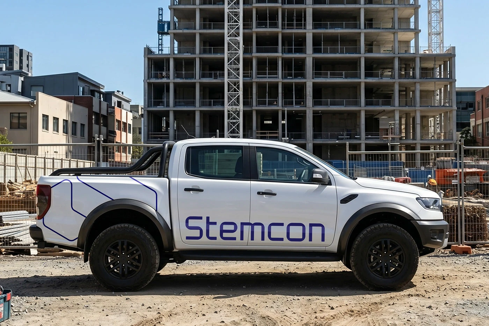
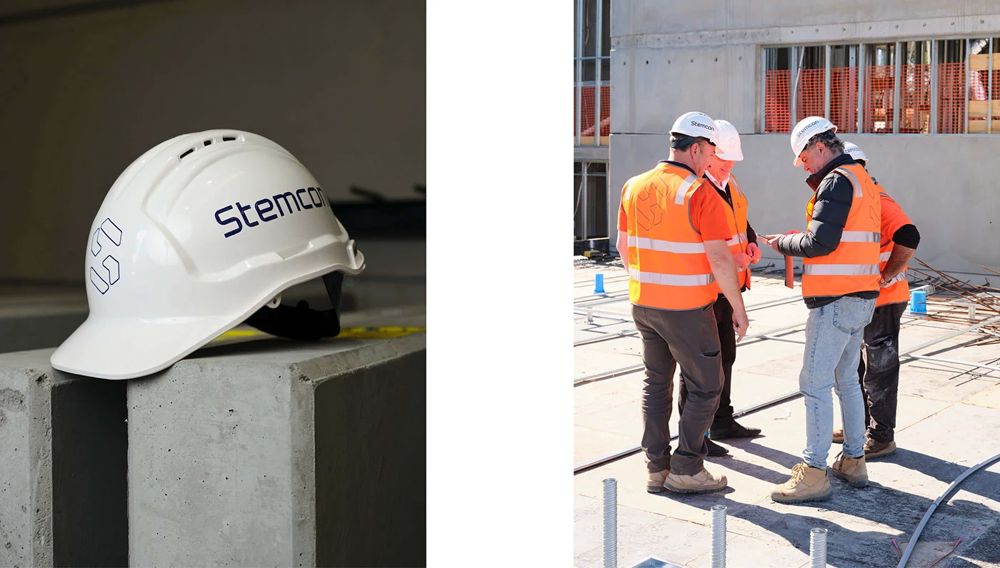
Signalétique de chantier
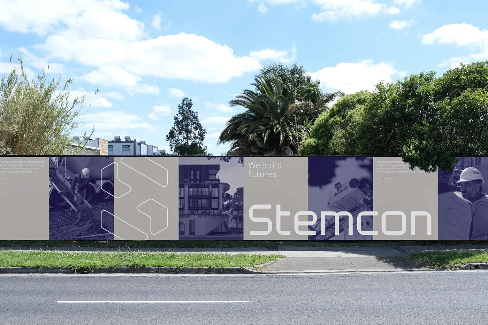
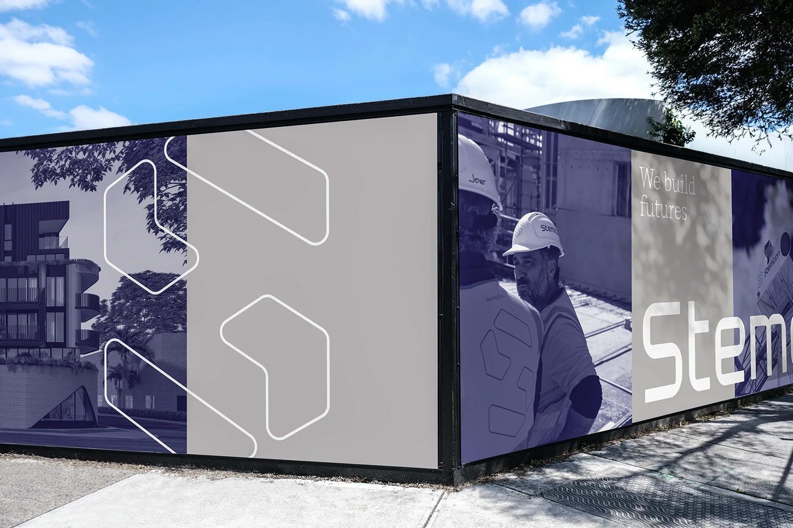
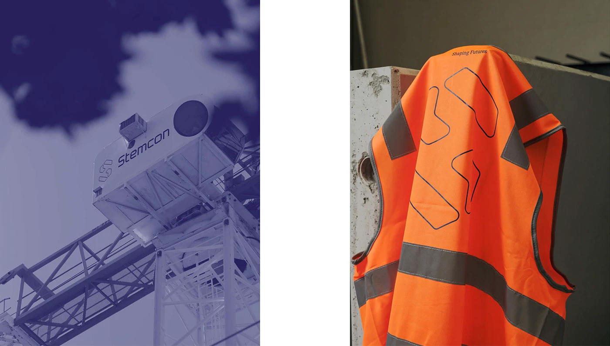
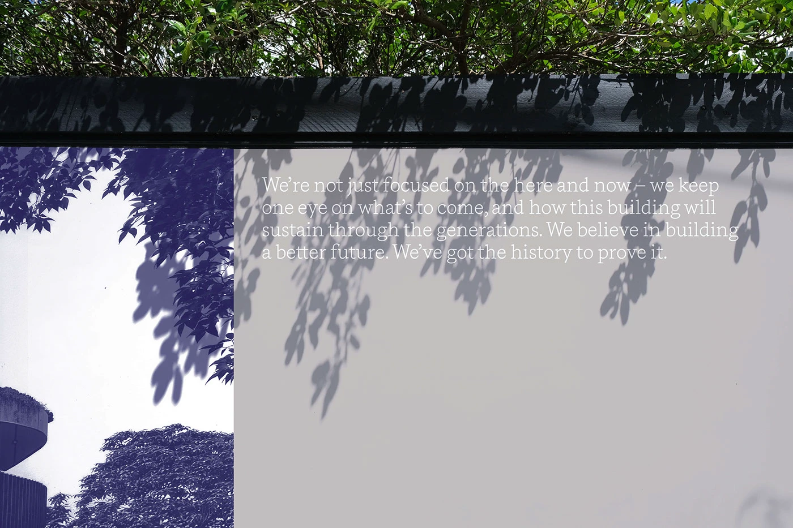
L'approche éditoriale
Un Capability Statement où le duotone indigo fait respirer la photographie.
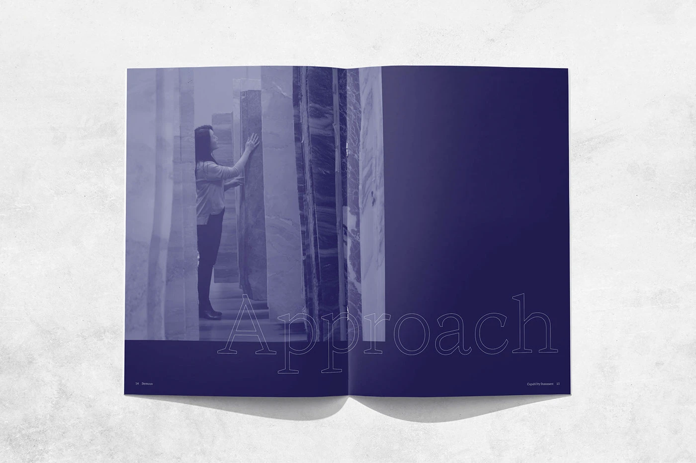
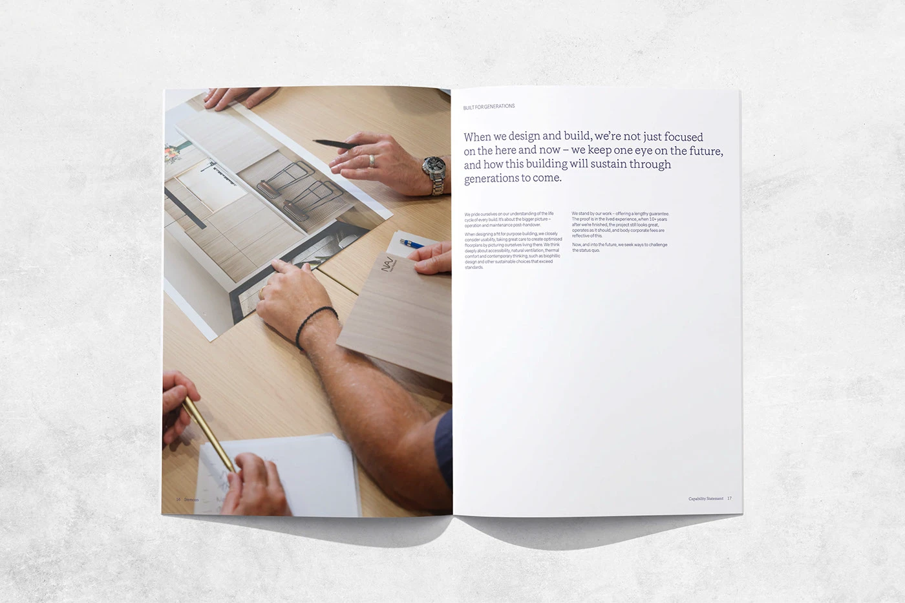
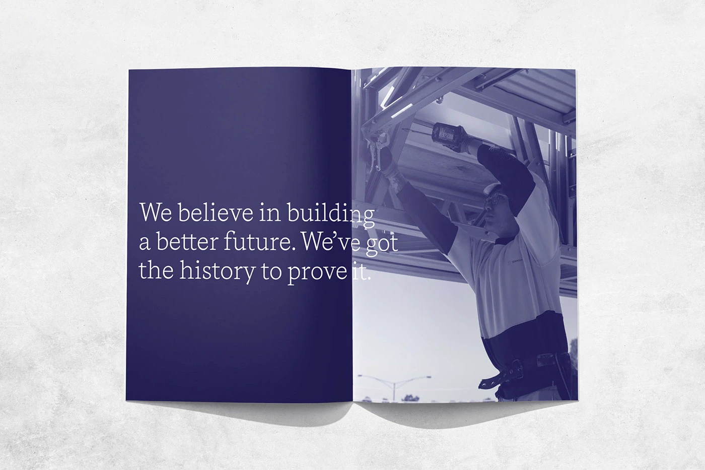
Sur le terrain
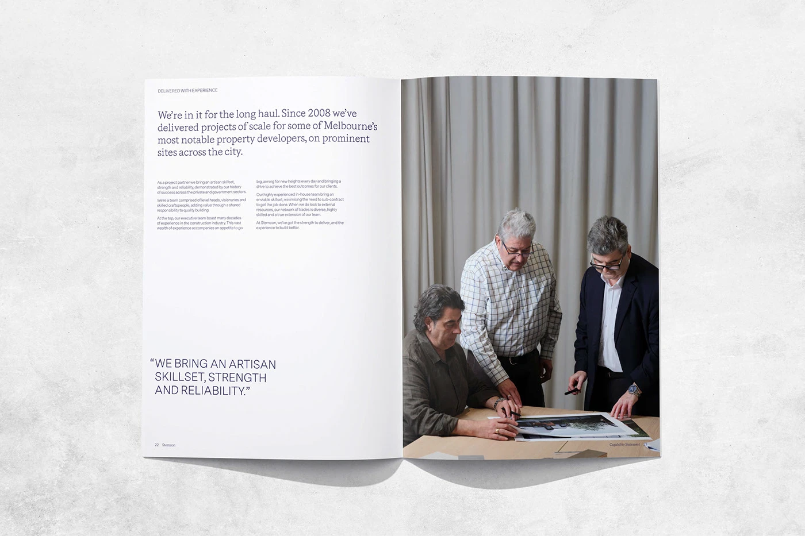
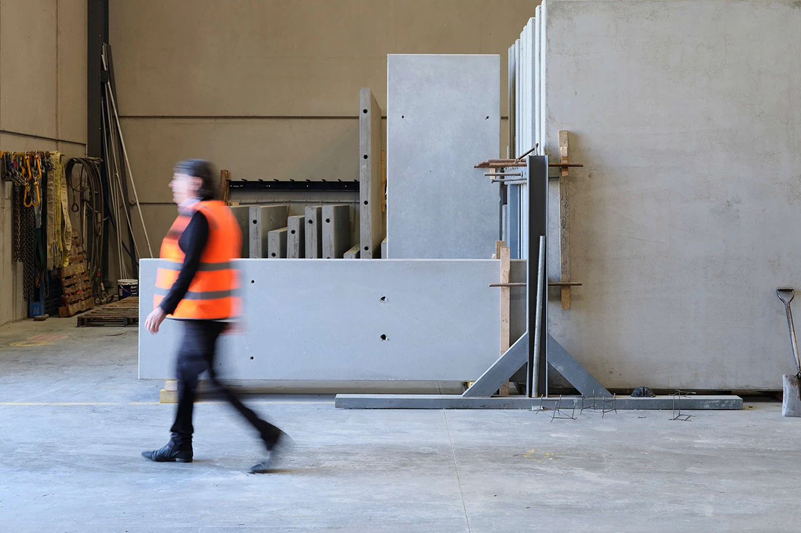
« We bring an artisan skillset, strength and reliability. »